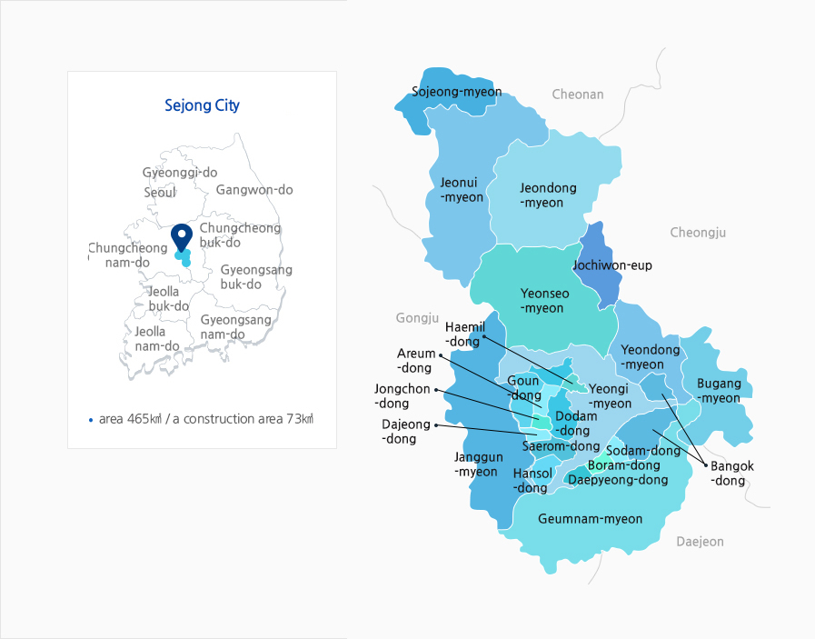
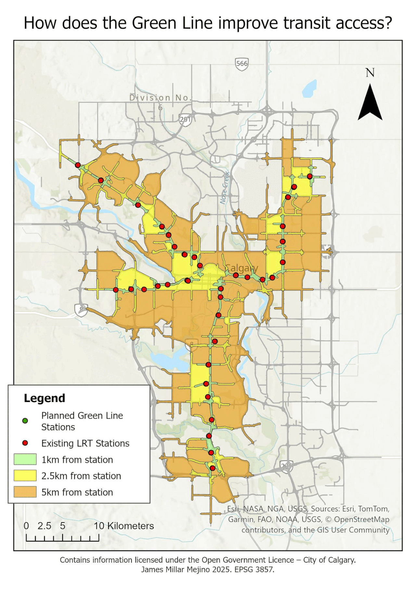
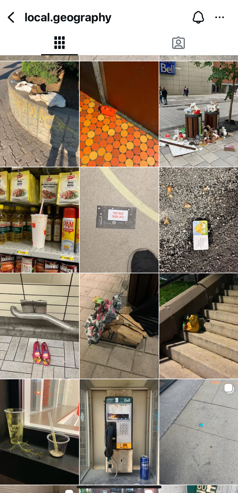
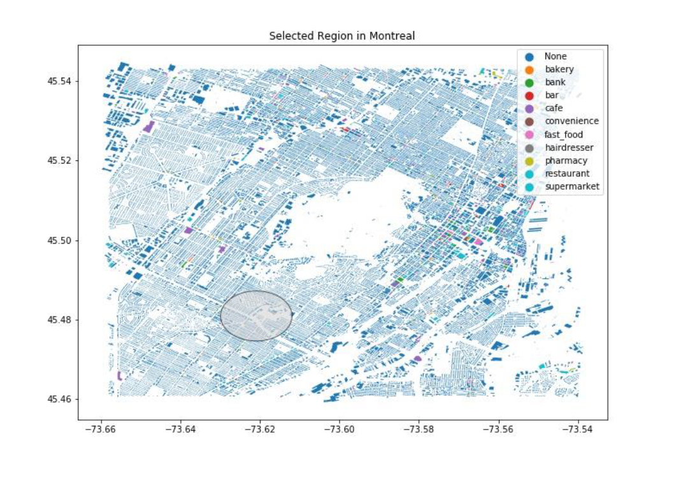
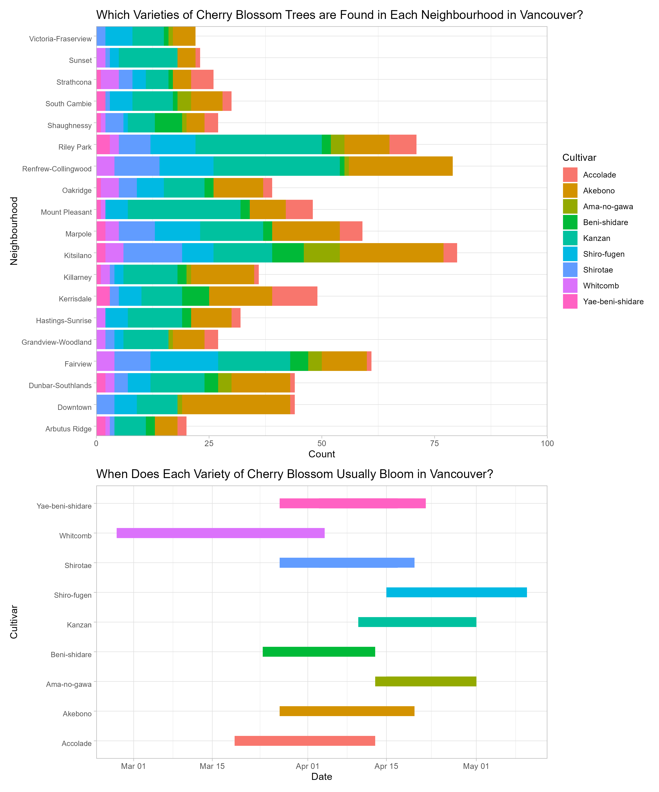
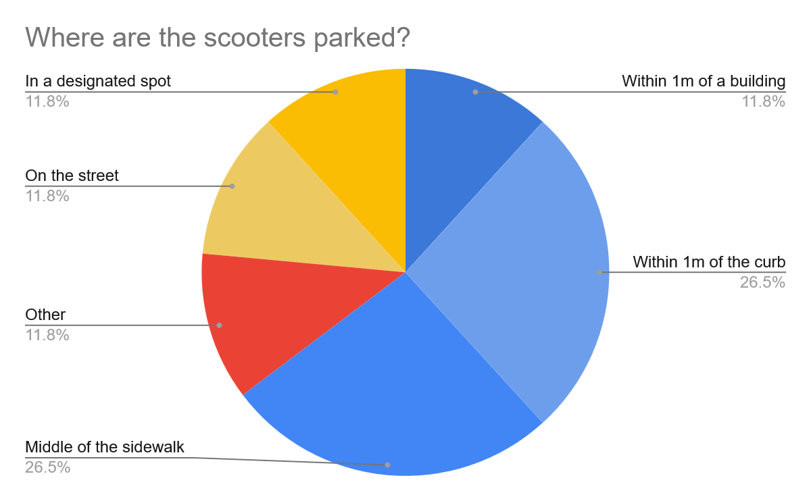
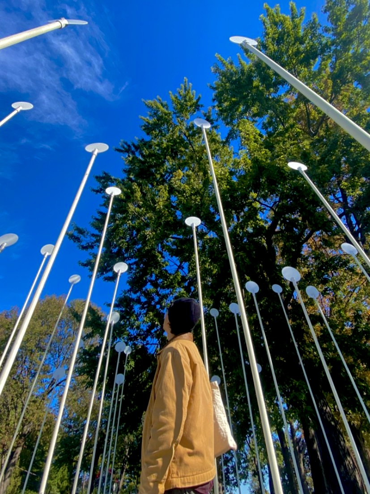

Expertise
- Data
- Design
- and People
- Transforming complex data into clear, actionable insights for diverse audiences.

About
I'm a Montreal-based urban planning professional with a background in geography and urban studies, and over 5 years of experience coordinating projects across the public and nonprofit sectors. I bring a unique combination of technical depth and hands-on community engagement experience, with a track record of delivering complex, multi-stakeholder projects on time and on budget. With a Master's in Urban Planning on my horizon and OUQ licensure as my professional goal, my interests are focused on transportation, adaptive reuse, and community development.
Good planning starts with people. The communities most affected by decisions about space, movement, and place should be centred in shaping them. Whether I'm automating a spatial workflow, facilitating a public consultation, or building a documentation system from scratch, I bring the same curiosity and care to the work. I'm bilingual in English and French, and committed to contributing to cities that are not just more livable, but more just, more resilient, and built with more attention to the people who call them home.
Recent Works
Here are some of my favorite projects I have done lately.
Feel free to check them out!


Sejong: A Comparative View into the New Administrative City’s Successes, Failures, and Anticipated Challenges
Abstract: Putrajaya’s sister city, Sejong is a new administrative city located 120 km from Seoul in the centre of South Korea with a similar vision and function. Much like its sister city, many government offices have been moved to Sejong to address the intense congestion that plagues Seoul. This paper will comparatively discuss how the two cities take different approaches to placemaking, population management, and urban transportation in order to meet similar needs and assess their successes and failures.
- Research
- Urban Geography

Green Line CTrain Expansion
The Green Line is the City of Calgary's largest public infrastructure project to date and is set to run from Calgary's north-central, through downtown, and to the south-east. When finished, the new LRT line will have 29 stations servicing over two dozen communities.
This project modelled transit access expansion for Calgary's planned Green Line LRT using ArcGIS Network Analyst plugin, producing service-area maps that quantify potential ridership catchment improvements for city planners.
- Transportation
- Cartography
- Calgary

@local.geography on Instagram
Local Geography is a digital field journal project that I conceived in 2018 and started production in 2022. Inspired by “Messy Urbanisms” and informed by urban geographic fieldwork techniques, the page documents artifacts of human activity found in everyday urban environments.
Using photography, geotagging, and critical observation, viewers are invited to investigate the story being told by the everyday urban environment through the lens of a geographer. Using artefacts left behind by human actors who are no longer present at the scene, we can begin to answer the question "What happened here?"
- Photography
- Urban Geography

GIS Workflow Automation with ArcPy
This project leveraged the ArcPy, geopandas, shapely, and matplotlib packages to engineer a Python script that automates search-area creation, spatial selection, area calculation, and CSV export, reducing a manual GIS workflow to a single script execution.
- Python
- Automation
- ArcPy

Data Visualization of Cherry Blossom Season in Vancouver
This is a data analysis project in RStudio. Above is a map from the 2025 Vancouver Cherry Blossom Festival showing 64 cultivars of cherry blossom trees across 47 different neighbourhoods in the Vancouver Metro Area. Data was retrieved from their website as a JSON file containing information on the cherry blossom trees including their location, cultivar, and blooming period.
This project leveraged the tidyverse, dplyr, ggplot2, and patchwork packages to produce a multi-panel R data visualization of Vancouver's spring 2025 cherry blossom season segmented by neighbourhood and cultivar to support urban forestry analysis.
Some interesting observations:
1) Kitsilano, Renfrew-Collingwood, and Riley Park are the neighbourhoods with some of the most cherry blossom trees.
2) Akebono and Kanzan make up a large proportion of all cultivars found in Vancouver.
3) Whitcomb is the cultivar that tends to bloom the earliest and Shiro-fugen the latest.
- Vancouver
- Data Visuzalization
- RStudio

Research on Montreal's e-Scooter Pilot Project
In August 2019, the City of Montreal approved permits for Lime, a U.S.-based vehicle-sharing company, to provide up to 430 dockless escooters on the streets. The following month, competing provider, Bird, was also granted a permit to release 250 e-scooters. As a result, 680 escooters were circulating within Montreal and making the city an important testing ground for whether such new vehicle- sharing micromobility services could be successfully integrated into the city’s existing modes of transportation. While these escooters represent a more active lifestyle, lower emissions, and a more sustainable form of transportation, it is important to recognize that they are also controversial due to many users’ refusal to follow existing laws, such as not wearing helmets, not abiding by parking laws, and obstructing pedestrian traffic by riding on sidewalks.
A systematic photographic method was used to collect data. We walked along certain streets for a set amount of time, recorded the time, date, and location, and took a photo of every parked eScooter which clearly showed whether the scooter is blocking foot or other traffic. Data was then evaluated using an audit tool, based on the parking guidelines provided in the eScooter mobile apps. The audit tool asks questions on how the scooters are parked and the street characteristics such as the size of the street, the presence of bike lanes, and the presence and size of sidewalks.
- Micromobility
- Montreal
- Research
Experience
Teaching Assistant
Computational and Data Systems Institute
2025
Supported instruction for a hybrid data science course, helping students build practical skills in RStudio, data analysis, and quantitative methods.
Provided one-on-one technical support, and served as the primary point of contact between students, the instructor, and department staff; ensuring a smooth course experience from start to finish.
Art Director
Independent Short Film
2024
Co-led the creative direction for an independent short film, overseeing set design, costume, and graphic design from pre-production through post.
Managed the full production budget; drafting estimates, processing transactions, and logging expenses while ensuring zero budget overruns.
Project Coordinator
McGill University
2022 - 2024
Planned and executed more than 20 projects; overseeing budget estimation, filing transactions, producing stakeholder communications, recruiting and training staff, liaising with external stakeholders and managing on-site logistics.
Website Coordinator
McGill University
2022
Led the end-to-end procurement and rollout of a redesigned departmental website, translated legacy help documentation into plain-language guides, and trained staff on the backend CMS; improving information accessibility and reducing resolution time.
Service Coordinator
McGill University
2020 - 2022
Conducted annual compliance reviews against provincial and university policies, ensuring consistent adherence to regulatory requirements and ensuring zero regulatory findings.
Education Coordinator
Union for Gender Empowerment
2020 - 2022
Developed curriculum and served as lead facilitator for Equity Diversity and Inclusion workshops, reaching 50+ attendees per year
across a 2-year tenure.
Mobile App Tester
Autorité Régionale de Transport Métropolitaine
2021
Performed pre-launch quality assurance for a public transit mobile application, executing structured test plans and documenting defects against product requirements. Compiled error data into structured reports for the development team, and submitted prioritized bug reports and UX recommendations that directly informed fixes before public deployment.
Information Officer
Elections Canada
2021
Served as a bilingual (EN/FR) information officer at a federal polling station; verifying voter eligibility, directing constituents to appropriate services, and responding to questions throughout the day. Handled ballot counting and verification at close of polls, ensuring accurate and compliant procedures from setup through takedown.
Volunteering
Finance Coordinator
Pan Asian Collective
2019 - 2025
Oversaw finances for a small nonprofit in the cultural sector. Managed budgets, tracked expenses, filed transactions, produced compliance reports, and drafted grant letters in support of over 20 projects over a 5-year tenure.
Board Member
Union for Gender Empowerment
2017 - 2020
Directed operations of a nonprofit in the advocacy space. Aligned the organization's growing operational needs with it's mission while overseeing budget, training and coordinating volunteers, and administering a resource library ensuring accessibility of educational material for community members.
Committee Member
McGill Equity, Diversity,
and Inclusion Committee
and Inclusion Committee
2018 - 2020
Reviewed and advised on strategic plans and annual reports in relation to EDI goals. Planned and executed programming for Queer History Month, and Lavender Graduation Ceremonies.
Skills & Software
GIS & Spatial
ESRI
ArcGIS Pro ver. 3.6, AGOL, Spatial Analyst, Network Analyst, Survey123, FME
QGIS
ver 3.4, PostgreSQL, PostGIS
ENVI
ver 6.1, Deep Learning, ACM, FX, DEM Extraction
Programming & Data
Python
ver 3.14.4, ArcPy, pandas, geopandas, shapely, plotly, matplotlib
RStudio
ver 2026.01.2+418.pro1, tidyverse, ggplot, tmap, terra, shiny, R Markdown
Design
Cartography
ESRI, QGIS
Graphic Design
Canva, Photoshop
Web Design
Wordpress, HTML, CSS, JS
Data Visualization
Excel, RStudio
Project Management
Agile
scrum, kanban, asana
Participatory Budgeting
Led consultations with community members to decide allocation of funding towards cultural projects.
Process Improvement
Optimized client onboarding and service request workflows, aligning cross-departmental collaboration and reducing resolution time.
Regulatory Compliance
Conducted annual compliance reviews against provincial and organizational policies, ensuring zero regulatory findings.
People
Stakeholder Engagement
Built relationships and collaborated with stakeholders; aligning long-term plans with positive outcomes for all parties involved.
Facilitation
Led conferences, workshops, and discussions.
Engaging participants in discovering and applying learning insights.
Active Listening
Cultivated mutual understanding and effective communication; reducing miscommunications, increasing efficiency, and contributing to a positive workplace environment.
Education & Certifications
Google Data Analytics
Coursera
2025 - Present
Agile Project Management
Coursera
2025
B.A. Geography - Urban Studies
McGill University
2022
Relevant Courses:
Cities in the Modern World, New Master-Planned Cities, Geospatial Analysis, Programming for Spatial Sciences, Advanced Quantitative Methods, Urban Field Studies, Geospatial Web, Sociology of Ethnic Relations, Sociology of Gender, Queer Theory.

Get In Touch
I would love to hear from you! Whether you have a question
or just want to chat about trains - shoot me a message.